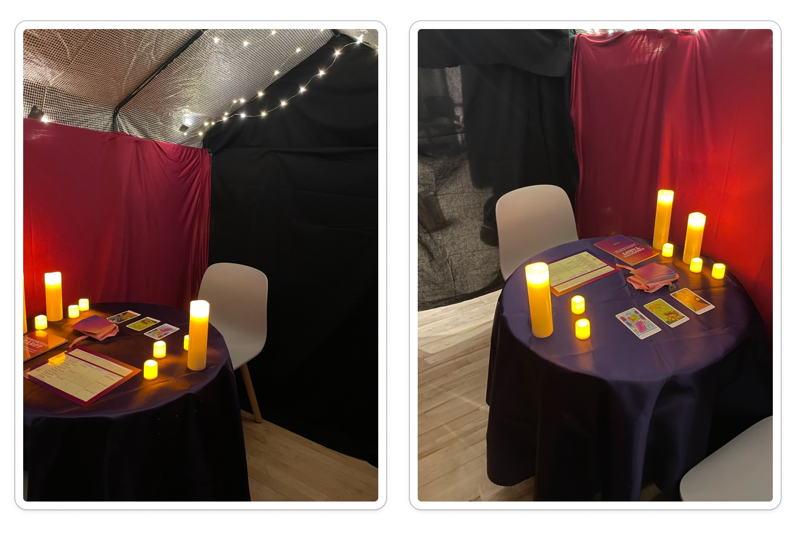

Thesis Weekly Update #14
May 6, 2024: Thesis archive
Final Project Update
This week, I spent time assembling my showcase setup. I decided to go forward with my fake psychic shop space. I used an indoor greenhouse frame and safety pinned a bunch of fabric on the exterior and interior. The reading would take place on a round table and two chairs, and the entrance curtain can be drawn closed if the pair wants more privacy.
I hadn’t realized earlier that I’d be sharing my space with two projection mapping projects, so the entire section of my room will be completely dark. Even so, I think the fairly lights and fake candles inside will provide decent illumination to see the cards and worksheet.
In addition to my original deliverables, I printed a single sheet of the instructions as well as QR codes linking to the worksheets, guidebook, and audio description of the instructions. I plan to have these available outside the tent (in addition to extra decks), so people can explore materials before they participate in a reading.
I’m really excited for the faculty crit and showcase. I think this will be super fun and I just love that people will get to try their hand at an exciting game.
